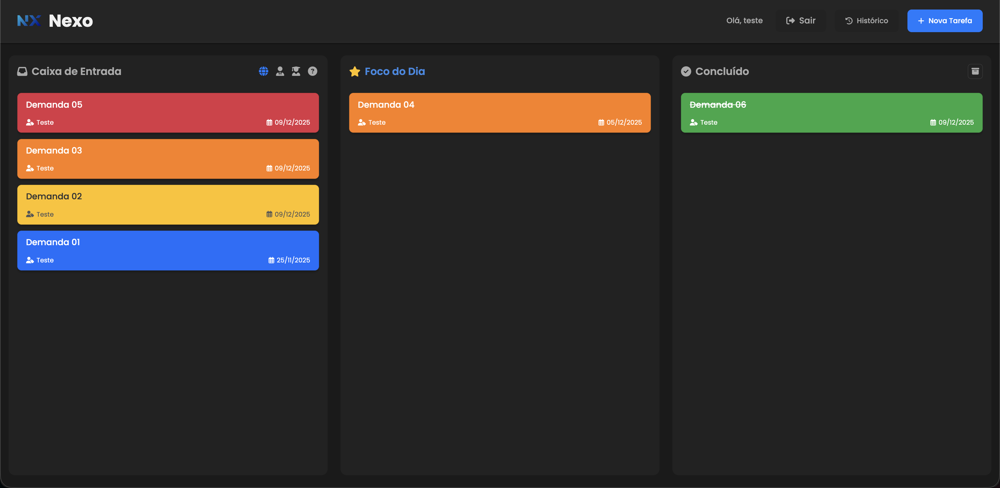
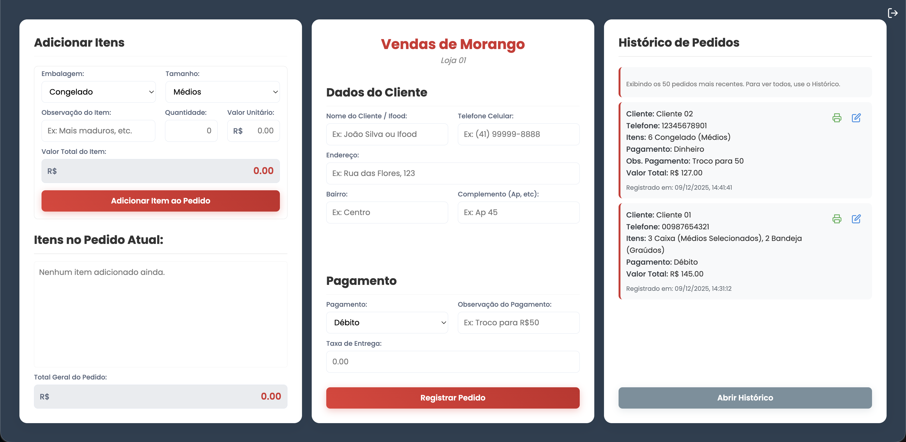
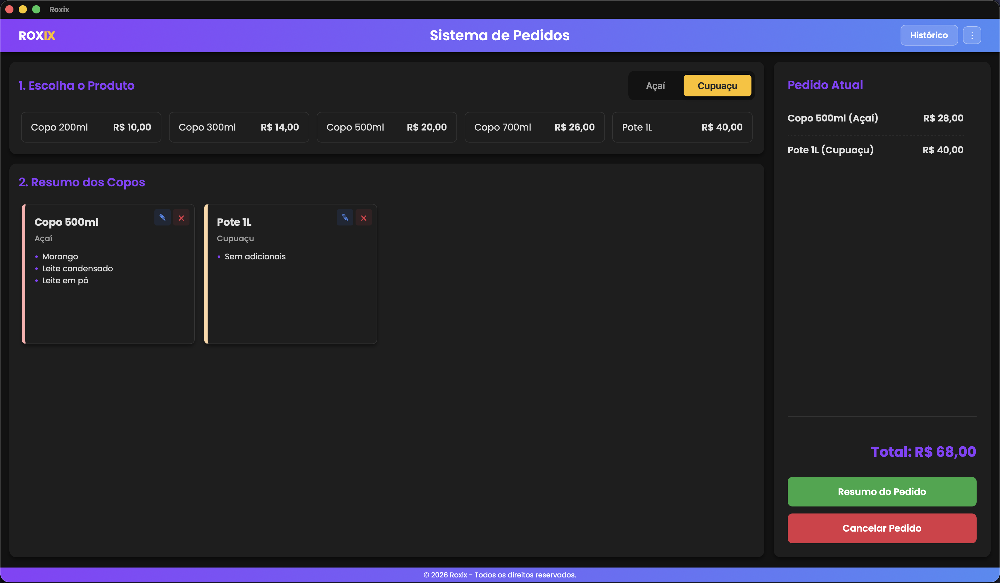
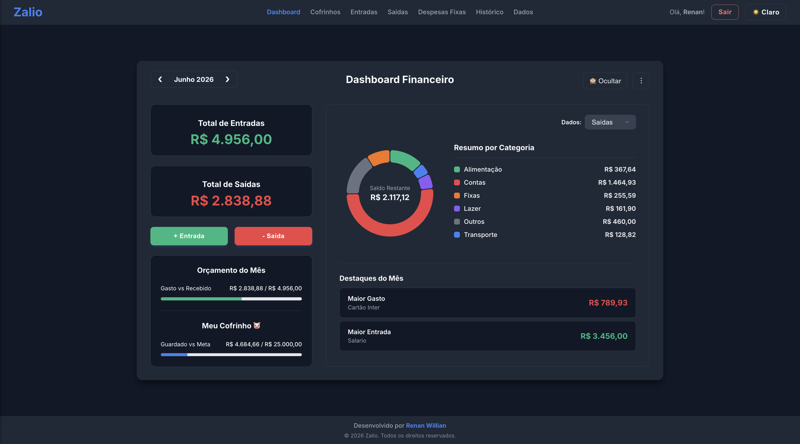
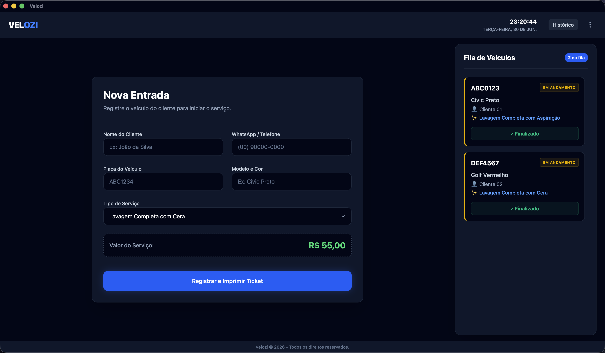

Sobre mim
Como Systems Technician II na Johnson Controls, atuo na otimização e implementação de sistemas críticos de automação predial e segurança eletrônica, como CFTV, SDAI e SCA, garantindo alta disponibilidade e eficiência para grandes operações.
Meu diferencial está na intersecção entre a manutenção de campo e o desenvolvimento de software. Com base técnica em Mecatrônica, expando minhas fronteiras através do curso técnico em Redes de Computadores e da graduação em Análise e Desenvolvimento de Sistemas (ADS). Essa bagagem me permite conectar com facilidade a infraestrutura física de hardware, as camadas de tráfego de dados e a arquitetura de aplicações.
Desenvolvo soluções de automação e painéis de gerenciamento utilizando stacks como Python, Node.js e React para transformar dados operacionais de campo em ferramentas visuais, relatórios automatizados e inteligência que apoiam a eficiência da operação.
Experiência
Systems Technician II
Johnson Controls | 2025 - Atual
Systems Technician I
Johnson Controls | 2023 - 2025
Assistente de Laboratório II
TECPUC | 2019 - 2022
Assistente Técnico
Autônomo | 2017 - 2018
Formação
CST em Análise e Desenvolvimento de Sistemas
Estácio | Previsão de conclusão: 2027
Técnico em Redes de Computadores
Unicorp | Previsão de conclusão: 2027
Técnico em Mecatrônica
PUCPR | Concluído em 2023
Meus Projetos

Nexo - Painel de Demandas
O Nexo é um sistema web centralizado de gestão de demandas e ordens de serviço, projetado para coordenar fluxos de trabalho operacionais, técnicos e de infraestrutura. A plataforma atua na organização de rotinas complexas e equipes de campo, permitindo a distribuição inteligente de tarefas por localidade, criticidade e responsáveis, garantindo total rastreabilidade operacional.
Módulos Inteligentes / Funcionalidades:
- Painel de Controle Operacional (Kanban): Visualização dinâmica e segmentada em colunas de triagem ("Caixa de Entrada", "Foco do Dia" e "Concluído") com classificação visual por cores para níveis de urgência e criticidade.
- Gestão Multiusuário e Delegação: Atribuição clara de responsáveis e equipes (Técnicos, Auxiliares, Estagiários) por atividade, facilitando o acompanhamento de demandas simultâneas.
- Rastreabilidade e Logística Predial: Organização de tarefas parametrizadas por ativos e unidades físicas específicas (sedes, salas técnicas, subsmatrix, barracões), centralizando históricos de manutenção e infraestrutura.
- Controle de Prazos e Alertas: Monitoramento visual de datas de criação e prazos de vencimento (SLA) para mitigar gargalos operacionais e otimizar o tempo de resposta em campo.

Sistema de Vendas e Recibos
Sistema para loja de morangos que registra pedidos, gerencia histórico e imprime recibos com dados do cliente e frete. Permite gerar relatórios de vendas personalizados por período, com detalhamento de itens e valor total.

Roxix - Sistema de Gestão
Desenvolvimento de uma solução completa de Ponto de Venda (PDV) concebida especificamente para otimizar as operações em açaíterias e comércios de resposta rápida. O foco deste software foi traduzir lógicas de negócio complexas numa ferramenta de utilização extremamente intuitiva para o balcão.
Arquitetura e Implementação:
- Interface Dinâmica e Ágil: Criação de uma interface de utilizador (UX/UI) focada na velocidade de operação, desenhada para acelerar o registo de pedidos e minimizar o tempo de espera dos clientes.
- Engenharia de Produto Customizada: Programação de módulos estruturados para suportar as variáveis exclusivas da venda de açaí e cupuaçu, calculando dinamicamente tamanhos, pesagens e o controlo de acompanhamentos extra.
- Sincronização Operacional: Desenvolvimento de um sistema de acompanhamento de estado em tempo real, conectando diretamente a frente de loja com a área de preparação e assegurando a rastreabilidade total do fluxo de trabalho.
- Infraestrutura de Dados Comercial: Integração com serviços de backend (BaaS) para o armazenamento seguro e relacional, garantindo a estabilidade do sistema em horários de pico e a integridade das transações financeiras.

Zalio - Dashboard Financeiro
O Zalio é uma plataforma robusta de gerenciamento financeiro pessoal desenvolvida para centralizar, automatizar e simplificar o controle orçamentário diário. O projeto foi projetado com foco em alta performance, escalabilidade e segurança de dados rigorosa.
Principais destaques técnicos e funcionalidades:
- Frontend Reativo: Construído em React com TypeScript, priorizando componentização, experiência do usuário (UX) e uma interface adaptável com suporte a modos visuais customizados.
- Backend-as-a-Service (BaaS): Integração com o Supabase utilizando PostgreSQL para persistência, estruturação de dados relacionais e sincronização em tempo real.
- Segurança e Identidade: Implementação completa de fluxos de autenticação, autorização e proteção de dados financeiros utilizando a plataforma Auth0 com validação de tokens JWT.
- Módulos Inteligentes: Desenvolvimento de dashboards analíticos com gráficos reativos por categoria, controle de despesas fixas recorrentes, histórico de lançamentos e gerenciador visual de metas ("Cofrinhos").

Velozi - Sistema de Gestão Operacional e Fluxo
Desenvolvimento de uma plataforma de gerenciamento operacional e controle de fluxo projetada especificamente para otimizar a rotina de lavatórios automotivos e centros de estética automotiva. O foco do software é centralizar o controle de entrada e saída de veículos, organizando as etapas de atendimento para eliminar gargalos e aumentar a produtividade da equipe.
Arquitetura e Implementação:
- Controle de Fluxo e Fila (Estante de Status): Implementação de uma lógica de esteira de produção para acompanhar o status em tempo real de cada veículo (Aguardando, Em Lavagem, Acabamento, Concluído), otimizando o tempo de pátio e a distribuição de tarefas.
- Interface Operacional Dinâmica: Criação de um front-end focado na agilidade do operador, permitindo a realização rápida do checklist de entrada, cadastro da placa e seleção de pacotes de serviços diretamente no balcão ou pátio.
- Engine de Serviços Customizável: Desenvolvimento de regras de negócio para gerenciar a precificação e o tempo estimado com base na categoria do veículo (Passeio, SUV, Moto) e na combinação de serviços aplicados (lavagem simples, higienização interna, polimento ou cera).
- Histórico e Persistência de Dados: Integração com arquitetura de banco de dados relacional para o armazenamento seguro de ordens de serviço e histórico por veículo, permitindo o controle financeiro das transações e fornecendo dados para a fidelização de clientes.